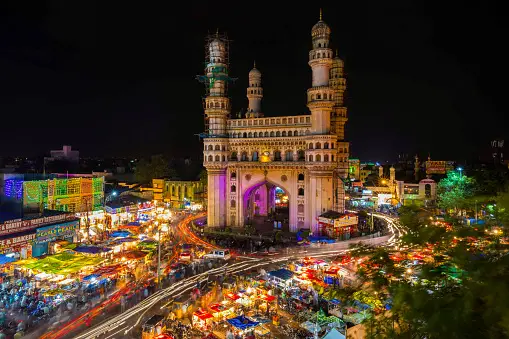
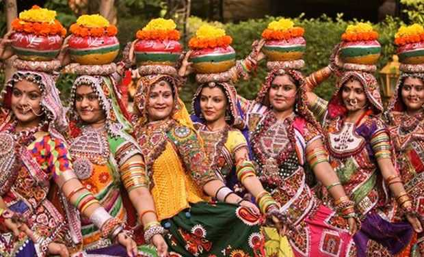
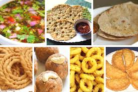
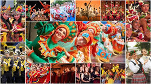

| ✧ Aspect | Information |
|---|---|
| ✧ Capital | Hyderabad |
| ✧ Chief minister | K. Chandrashekar Rao |
| ✧ Largest City | Hyderabad |
| ✧ Districts | 33 |
| ✧ Official Language | Telugu |
| ✧ Other Language | Urdu |
| ✧ Population | Approximately 39.6 million |
| ✧ Area | 112,077 square kilometers |
| ✧ Major Rivers | Godavari, Krishna, Musi |
| ✧ Major Industries | Information Technology, Pharmaceuticals, Textiles, Agriculture |
| ✧ Popular Places | Charminar, Golconda Fort, Ramoji Film City, Hussain Sagar |
Traditional Dresses in Telangana for men includes the dhoti and kurta, often paired with a waistcoat, while women commonly wear saris with a blouse. Traditional attire varies across different communities and occasions.
Telangana, a state in southern India, has a rich history that spans over several millennia. The region has been inhabited since ancient times and has witnessed the rule of various dynasties and empires.
The early history of Telangana is characterized by the presence of dynasties such as the Satavahanas, Kakatiyas, and Chalukyas. These kingdoms made significant contributions to the cultural and architectural heritage of the region.
During the medieval period, Telangana came under the rule of the Delhi Sultanate and later the Bahmani Sultanate. The Qutb Shahi dynasty, founded by Sultan Quli Qutb Shah, established the Golconda Sultanate, which flourished for centuries and was known for its architectural marvels and economic prosperity.
In the 17th century, the region witnessed the emergence of the Asaf Jahi dynasty, also known as the Nizams of Hyderabad, who ruled over Telangana as a princely state under the suzerainty of the Mughal Empire and later the British East India Company.
Telangana played a significant role in India's freedom struggle, with leaders like Komaram Bheem and Alluri Sitarama Raju leading tribal uprisings against British rule. After India gained independence in 1947, Telangana was part of the princely state of Hyderabad until 1956 when it was merged with Andhra Pradesh.
In 2014, Telangana was carved out of Andhra Pradesh to become India's 29th state, with Hyderabad as its capital. Since then, Telangana has witnessed rapid development in various sectors, including information technology, agriculture, and infrastructure.



